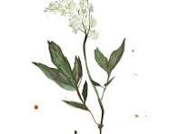

MEADOWSWEET
{kind=link}
Meadowsweet is used for colds, bronchitis, upset stomach, heartburn, peptic ulcer disease, and joint disorders including gout. It is also used to increase urine output and kill germs in the urine of people with bladder infections. It has antispasmodic and calming properties. This beautiful plant can help relieve menstrual cramps and period pain. It can also be used to relieve anxiety and promote sleep. Who should not take meadowsweet? Pregnancy: It is likely unsafe to use meadowsweet while pregnant. It might make the uterus contract, causing a miscarriage. Breast-feeding: There isn't enough reliable information to know if meadowsweet is safe to use when breast-feeding. Stay on the safe side and avoid use. Most herbalists recommend that if you're new to meadowsweet that you begin by drinking small amounts of tea made with this herb. The most common way to use the dried flowers and fresh roots for their medicinal properties is to make herbal meadowsweet tea. If you want to grow it in your own garden, all you need is a spot in full sun with rich, moist soil. End of June and July are the busiest harvesting times for a medicinal herb farmer.
ISLANDIC MOSS

Iceland moss is used for treating irritation of the mouth and throat, loss of appetite, common cold, dry cough, bronchitis, indigestion, fevers, lung disease, kidney and bladder complaints, and the tendency toward infection. Even though mosses are known for thriving in harsh environments, they still need a lot of water, above-zero temperatures and sunlight in order to grow and expand. If it's too cold or too dry, they stay dormant and wait for better living conditions.
RASPBERRY

Raspberry leaves are often used to treat symptoms of cold, as it has properties to reduce fever, related pain. Red raspberry leaf has been recommended as a tonic to improve fat metabolism and encourage weight loss. It is often sold as a “detoxifying” supplement meant to improve body composition and overall health. Red raspberry leaf tea has been used for centuries as a traditional remedy for various health purposes, particularly for women’s reproductive health. The tea is rich in vitamins, minerals and plant compounds, including tannins and flavonoids. It’s known for its high content of vitamin C, vitamin E, vitamin A, calcium, iron, potassium and magnesium. Often associated with pregnancy and childbirth, red raspberry leaf tea is believed to help with toning the uterus, strengthening the pelvic muscles and promoting smoother labor. Some women drink red raspberry leaf tea in the later stages of pregnancy to help prepare their bodies for childbirth. Additionally, red raspberry leaf tea is consumed for several other potential health benefits. It’s used as a mild tonic for supporting overall well-being, promoting healthy digestion and alleviating menstrual discomfort. The tea is also used for its potential antioxidant and anti-inflammatory properties.Choose a sunny planting site for best results. Raspberries will fruit in light shade, but will produce a smaller crop and be less robust and healthy. Raspberries are usually grown in rows, ideally running north to south so the plants don't shade each other. The leaves are best harvested in the spring before the flowers emerge. Choose young, bright green leaves. Since the leaves shrink down quite a bit after they are dried, harvest more than you think you'll need. Start with at least a couple handfuls
ROSEHIP
{kind=link}
Rosehip tea is renowned for its potential health benefits, including its ability to: Boost Immunity: The high vitamin C content in rosehip tea can help prevent and alleviate colds and flu. Joint Health: Rosehip tea may offer relief from joint pain and stiffness, making it a natural remedy for arthritis sufferers.Improving digestion: Rose hips contain pectin, a type of fiber that can help to improve digestion and reduce constipation. Reducing stress and anxiety: Some people claim that drinking rose hip tea can help to reduce stress and anxiety, although more research is needed to confirm this effect. The best time to pick them is after the first frost, then you really get the sweetness that they stow away to burst forth for a relatively small window in the late fall. You can pick them before the frost, just make sure they are nice and red, if you want to sweeten them up just pop them in the freezer.
BLACKCURRANT

As well as high levels of Vitamin C and other antioxidants, blackcurrants contain soluble and insoluble fibre as well as important carbohydrates to give you energy. Soluble fibre helps to slow down the release of nutrients, particularly glucose, into the blood stream, which is healthier for the body.Find yourself slumping at your desk mid-afternoon? Try swapping your energy drink for a fruity blackcurrant tea. Rich in anti-oxidants, research has shown that blackcurrant extract can help people stay more alert, reduce mental fatigue and even work with greater accuracy while under significant mental stress.Black currant doesn't only tastes great, it may offer many great health benefits such as regulating blood pressure, increasing fat oxidation and promoting skin health.A black currant is a diminutive fruit that packs a big nutritional punch in a small package. Each dried berry in Tea Forté’s black currant tea blends contains a dose of antioxidants believed to reduce cancer-causing free radicals in the human body. A cup of tea made with this vibrant ingredient delivers a generous serving of vitamin C that may stave off colds and infections. Black currant also provides a serving of blood-building iron, as well as plenty of eye-protective vitamin A and gamma-linolenic acid (GLA), which may boost the effectiveness of the human immune system.Blackcurrants crop best in a sunny location but will also do well in light shade. Blackcurrants are easy to grow, producing a delicious summer harvest with little upkeep required.
LINDEN FLOWERS

Linden flowers are sometimes suggested to treat colds, cough, fever, infections, inflammation, high blood pressure, headache (particularly migraine); as a diuretic (increases urine production), antispasmodic (reduces smooth muscle spasm along the digestive tract), and sedative.Linden is a common name for trees belonging to the Tilia genus. The dried flower, leaves, and wood are used for medicine. People use linden for conditions such as colds, headache, trouble sleeping (insomnia), itchy skin, and many others, but there is no good scientific evidence to support these uses.Linden trees typically bloom between June and July and once they are in full bloom, it is best to harvest the flowers within the first 4 days. Remember that the large-leaved linden flowers a little earlier than the small-leaved linden does.